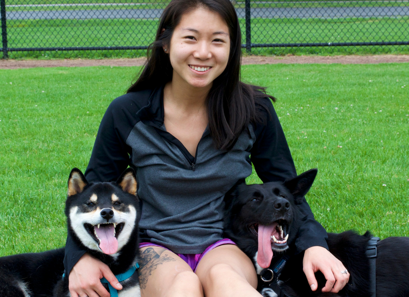

B.A. Psychology, University of Vermont
Karen Pryor Academy for Animal Training & Behavior
more
Professional Memberships and Affiliations:
International Association of Animal Behavior Consultants
United States Dog Agility Association
Canine Performance Events
New England Trainer’s Network
Operation Delta Dog
Training Philosophy:
Lisa focuses on using evidence-based methods to achieve desired behaviors, as well as strengthen the bond between dogs and their owners.
Areas of Interest and Expertise
Agility
Operant conditioning
Clicker training
Reactivity in dogs
Service dog training
Kim Melanson: BFA, CPDT-KA
Education and Experience
Professional Dog Trainer since 2001
Certified Pet Dog Trainer (CPDT-KA)
AKC Canine Good Citizen Evaluator
Counseling Certificate from the SF-SPCA
Professional Memberships and Affiliations:
Association of Pet Dog Trainers
International Association of Animal Behavior Consultants
Consultant, Save-a-dog Rescue Sudbury Ma
Founding Member, shelter for Shelter Dogs Animal Rescue League of Boston
Training Philosophy:
Kim's training philosophy is solidly based in techniques that are humane and based on science. Her strategies seek to build communication and a lasting relationship with your dog.
Areas of Interest and Expertise
Canine Behavior counseling
Obedience Training from basic to Advanced
Puppy Training and Classes
Shelter Volunteer Training
Implementation of evaluation and rehabilitation programs and shelters and rescue organizations
Alison MacDonald, KPA CTP
Education and Experience
Karen Pryor Academy Graduate
TAGTeach Certified
Living and Learning with Animals with Dr. Susan Friedman
IAABC Principles and Practices of Animal Behavior Consulting
Don Blair Nosework Seminar
10+ Fenzi Dog Sports Academy courses
Ken Ramirez Advanced Training Topics Seminar
Sue Sternberg Dog - Dog Interactions Seminar
Professional Memberships and Affiliations:
Karen Pryor Academy Certified Training Partner
TAGTeach International
New England Professional Groomers
IAABC
Fenzi Dog Sports Academy Alumnus
Member or Performance Scent Dogs (PSD)
National Association of Canine Scentwork (NACSW)
Titles
Nosework 3 (NW3, NACSW)
Scent Dog Advanced (PSD-SDA)
Clubs and Groups
Foster for New England Brittany Rescue
Volunteer for Pug Rescue of New England
Training Philosophy:
Using humane science based methods I can help you open up a conversation with your dog that will allow you to communicate your expectations, better understand your dogs needs and build a relationship based on trust, clear communication and fun!
Areas of Interest and Expertise
Desensitization and handling for nervous/fearful dogs
Puppy acclimation to grooming and intrusive handling
Nosework classes and competition
Building confidence in fearful dogs
Helping reactive dogs feel better about their world
Off leash skills

Celine Yang: BS, KPA CTP
Education and Experience
Karen Pryor Academy Dog Trainer Professional graduate
Ken Ramirez Advanced Training Topics Seminar
Michele Pouliot Canine Freestyle and Platform Training Seminar
13+ Fenzi Dog Sports Academy courses
Professional Memberships and Affiliations:
Karen Pryor Academy Certified Training Partner (KPA CTP)
Fenzi Dog Sports Academy Alumnus
Performance Scent Dogs (PSD)
National Association of Canine Scent Work (NACSW)
Certified Trick Dog Instructor via Do More With Your Dog
Titles
Nosework 2 (NW2), 3rd Place Overall
Scent Dog Advanced (PSD-SDA)
Intermediate Trick Dog (ITD)
Training Philosophy:
Celine utilizes positive reinforcement training methods to strengthen communication between dog and handler. She strives to maximize engagement from the dog and to learn and honor each dog's choices and preferences. Celine's ultimate goal is for her dogs to view work as play and play as work!